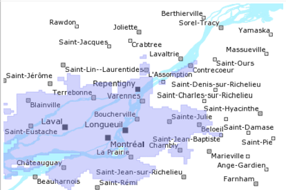

| Métadonnées | |
|---|---|
| Titre abrégé | CMM 2009 (Ortho) |
| Description | Les 2873 orthophotos qui composent la couche « Orthophotographies couleur et infrarouge de la Communauté métropolitaine de Montréal 2009 - (10 cm) » ont subi des manipulations afin d'optimiser les performances d'affichage dans un contexte de diffusion (WMS). Les transformations suivantes ont été apportées aux images originales (format tif/tfw): - Insertion des informations de géoréférence directement dans l'image pour éviter le processus répétitif d'ouverture et de fermeture des fichiers .tfw lors de génération de cartes; -Découpage interne en petites tuiles pour chacune des orthophotos. De cette façon, lorsque qu'une partie seulement de l'image est requise pour produire une carte, le fichier n'a pas besoin d'être lu en entier ; -Génération de représentations internes (« overview ») à différentes échelles. Grâce à ce procédé, l'utilisation des orthophotos est optimisée pour prendre en charge la génération de carte à petite et à grande échelle en utilisant les résolutions correspondantes. |
| Sujets |
|
| Auteur | Géoboutique Québec - Ministère de l'Énergie et des Ressources naturelles |
| Données géospatiales | |
| Type de représentation spatiale | matricielle |
| Nombre d'objets géometriques | EPSG:32188 |
| Échelles (dénominateur) | 1000 |
| Distance au sol | 10cm |
| Étendue temporelle | de 2009 à 2010 |
| Boîte géographique |  |
| Contact | |
| Cartothèque de l'Université de Montréal Tél. 514 343-8038 Fax 514 343-8008 520, chemin de la Côte-Ste-Catherine, Université de Montréal MontréalQuébecH2V 2B8 Canada carto@umontreal.ca |
|